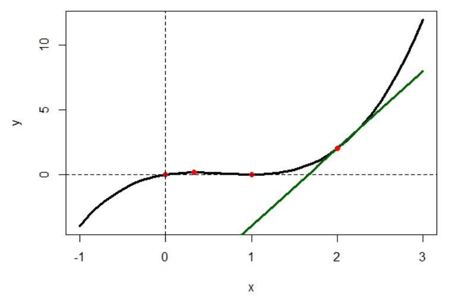
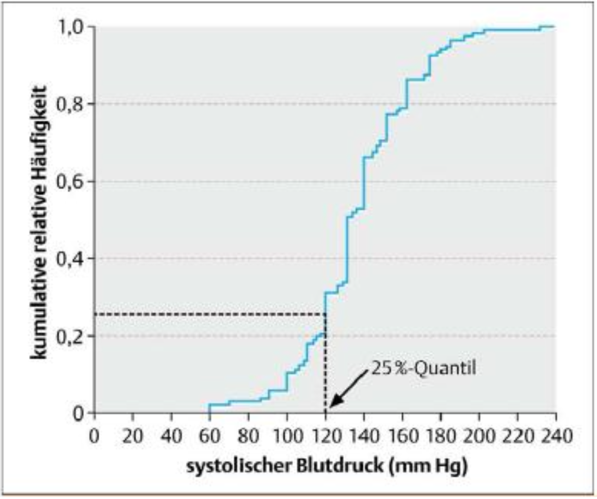
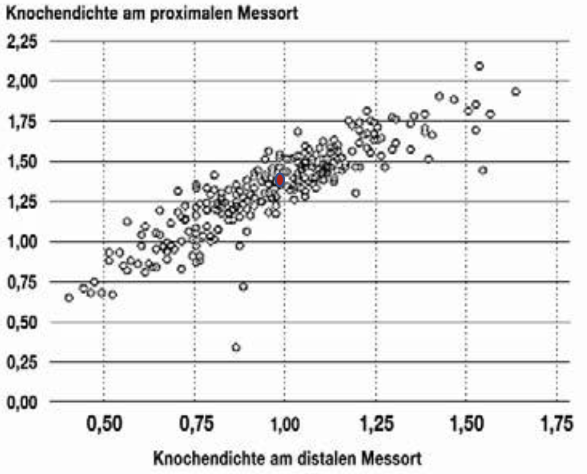

Abschlussübungen
Gemischte Übungen aus allen Blöcken
Hinweis: Runden Sie das Ergebnis wenn nötig, auf zwei Nachkommastellen und verwenden Sie als Dezimaltrennzeichen den Punkt (Bsp.: \(5.24\))
Übung 1
Betrachten Sie die Funktion \(f(x) = (x - 1 )^{2} \cdot x \) im Intervall [-1, 3].
- Bestimmen Sie die Nullstellen der Funktion \(f(x)\)?
Die Funktion ist ein Produkt: \(f(x) = (x - 1 )^{2} \cdot x = 0\)
Ein Produkt ist null, wenn mindestens ein Faktor null ist:
\((x - 1 )^{2} \Rightarrow x = 1\) (doppelte Nullstelle)
Nullstellen: \(x_{1} = 0,\quad x_{2} = 1\)
- Bestimmen Sie die Tangente im Punkt \(x_{0} = 2\) und zeichnen Sie die Tangente ein?
Tangente bei \(x_{0} = 2\)
Zuerst die Funktion ausmultiplizieren:
\[ f(x) = (x^2 - 2x + 1)\cdot x = x^{3} - 2x^{2} + x \]
Ableitung:
\[ f'(x) = 3x^{2} - 4x + 1 \]
Steigung bei \(x_{0} = 2\):
\[ f'(2) = 3\cdot 4 - 4\cdot 2 + 1 = 12 - 8 + 1 = 5 \]
Funktionswert bei \(x_{0} = 2\):
\[ f(2) = (2 - 1)^2 \cdot 2 = 1 \cdot 2 = 2 \]
Tangentengleichung in Punkt-Steigungs-Form: \[ t(x) = f'(2)(x - 2) + f(2) \]
\[ t(x) = 5(x - 2) + 2 \]
\[ t(x) = 5x - 10 + 2 \]
\[ t(x) = 5x - 8 \]
- Bestimmen Sie die Extremstellen im Intervall \([-1,3]\)
Notwendige Bedingung für Extremstellen:
\[ f'(x)=0 \]
Da \(f'(x)=3x^2-4x+1\) gilt:
\[ 3x^2-4x+1=0 \]
Mit der Mitternachtsformel erhält man:
\[ x=\frac{4\pm\sqrt{16-12}}{6} \]
\[ x=\frac{4\pm\sqrt{4}}{6} \]
\[ x=\frac{4\pm2}{6} \]
Damit folgen die beiden Lösungen: \[ x_{1} = 1 \quad \text{und} \quad x_{2} = \frac{1}{3} \]
Eingesetzt in die Funktion \(f(x)\) ergibt sich für die Extremstellen und am Rand: \[ f(-1) = -4 \] \[ f(\frac{1}{3}) = \frac{4}{27} \] \[ f(1) = 0 \] \[ f(3) = 12 \]
Daraus lässt sich ablesen, dass die absoluten Extremwerte am Rand liegen. Da ein Polynom vom Grad 3 entweder zwei Extremwerte oder eine Wendestelle besitzt, sind die inneren Punkte auch lokale Extremwerte.
- Skizzieren Sie die Funktion auf dem Intervall \([-1,3]\)

- Berechnen Sie die Fläche unter der Kurve im Intervall \([-1,1]\)
Gesucht ist die Fläche unter der Kurve im Intervall \([-1,1]\).
Da die Funktion im Intervall \([-1,0]\) unter der \(x\)-Achse und im Intervall \([0,1]\) über der \(x\)-Achse liegt, wird die Fläche in zwei Teilflächen zerlegt:
\[ A = \left| \int_{-1}^{0} (x^3 - 2x^2 + x)\,dx \right| + \left| \int_{0}^{1} (x^3 - 2x^2 + x)\,dx \right| \]
Eine Stammfunktion ist:
\[ F(x) = \frac{1}{4}x^4 - \frac{2}{3}x^3 + \frac{1}{2}x^2 \]
Damit ergibt sich:
\[ A = \left| \left( \frac{1}{4}x^4 - \frac{2}{3}x^3 + \frac{1}{2}x^2 \right)\Big|_{-1}^{0} \right| + \left| \left( \frac{1}{4}x^4 - \frac{2}{3}x^3 + \frac{1}{2}x^2 \right)\Big|_{0}^{1} \right| \]
Also:
\[ A= \left| 0-\left(\frac{1}{4}+\frac{2}{3}+\frac{1}{2}\right) \right| + \left| \left(\frac{1}{4}-\frac{2}{3}+\frac{1}{2}\right)-0 \right| \]
\[ A=1.5 \]
Übungen 2 – (Mengen)
Gegeben sind folgende Mengen \(A = \{1,4,7,9,11\} \;\; \text{und} \;\; B = \{1,4,6,9\}\)
- Bestimmen Sie \(A \cup B = \{\) \(\}\)
- \(A \cup B = \{1, 4, 6, 7, 9, 11\} \Rightarrow\) Vereinigung (ODER: enthält alle Elemente, die in A oder B vorkommen).
- Bestimmen Sie \(A \cap B = \{\) \(\}\)
- \(A \cup B = \{1, 4, 9\} \Rightarrow\) Vereinigung (UND: enthält nur Elemente, die sowohl A als auch B haben).
Übungen 3 – (Ableitung)
Bestimmen Sie die erste Ableitung der folgenden Funktionen
- \(f(x) = 3x^{2} + e^{4x}\)
- \(f^{\prime}(x) = 6x + 4e^{4x} \Rightarrow\) (Notiz: innere Ableitung von \(e^{4x}\) ist \(4\)).
- \(f(x) = 2 \cdot x + (1 - x)^{2}\)
- \(f^{\prime}(x) = 2 - 2 \cdot (1 - x) = 0 + 2 \cdot x \Rightarrow\) (Notiz: innere Ableitung von \((1 - x)^{2}\) ist \(-1\))
- \(f(x) = \frac{1}{x} + 2\)
- \(f^{\prime}(x) = -\frac{1}{x^{2}} \Rightarrow\) (Notiz: \(\frac{1}{x} = x^{-1}\))
Übungen 4 – (Ableitung, Integral)
Gegeben ist die Funktion \(f(x) = 2 \cdot x + 2\)
- Bestimmen Sie die Nullstellen der Funktion.
\(x =\)
- \(f(x) = 0\)
\(\Leftrightarrow 2 \cdot x + 2 = 0\)
\(\Leftrightarrow 2x = -2\)
\(\Leftrightarrow x = -1\)
- Bestimmen Sie die erste Ableitung der Funktion.
- \(f^{\\prime}(x) = 2\)
- Bestimmen Sie die Fläche unterhalb der Funktion \(f(x) = 2 \cdot x + 2\) für \(-2 \leq x \leq 4\).
Die Stammfunktion ist \(F(x)=x^2+2x\).
Die Nullstelle hatten wir bestimmt mit \(x=-1\).
Bestimmung der Fläche: Addiere die Fläche für \(-2 \leq x \leq -1\) und für \(-1 \leq x \leq 4\).
- \(\int_{-2}^{-1} (2x + 2)dx = x^{2} + 2x \mid_{x = -2}^{x = -1}\)
\(= F(-1) - F(-2) = (1 - 2) - (4 - 4) = -1\)
\(\Rightarrow\) Betrag davon ist dann \(\left|\int_{-2}^{-1} (2x+2)\,dx\right| = 1\)
- \(\int_{-1}^{4} (2x +2)\,dx = x^2+2x \mid_{x=-1}^{x=4}\)
\(= F(4)-F(-1) = (16+8)-(1-2) = 25\)
\(\Rightarrow\) Somit ist die Fläche \(= 1 + 25 = 26\)
- \(\int_{-2}^{-1} (2x + 2)dx = x^{2} + 2x \mid_{x = -2}^{x = -1}\)
Übungen 5 – (Exponentialfunktion)
In einem Forschungsinstitut wird der Einfluss der Umgebungstemperatur auf das Wachstum von Pflanzen untersucht. Die Temperatur ändert sich gemäß der Funktion \(f(t) = 6t \cdot e^{1 - 0.5t}\) (t = Zeit in Tagen).
- Bestimmen Sie \(f(2)\).
\(f(2) =\)
Wann ist die maximale Temperatur erreicht?
Schritt 1: Bestimmen Sie die erste Ableitung \(f'(t)\) mit der Produktregel (\(u' \cdot v + u \cdot v'\)).
\(f'(t) = \,\)
Schritt 2: Setzen Sie \(f'(t) = 0\) und lösen Sie nach \(t\) auf.
\(t =\)
Schritt 3: Die maximale Temperatur ist erreicht nach Tagen und beträgt °C.
(a)
\[f(2) = 6 \cdot 2 \cdot e^{1-0.5 \cdot 2} = 12 \cdot e^{0} = 12 \quad (\text{Notiz: } e^0 = 1)\]
(b)
1. Ableitung (Produktregel: \(u = 6t,\ v = e^{1-0.5t}\)):
\[f'(t) = 6 \cdot e^{1-0.5t} + 6t \cdot e^{1-0.5t} \cdot (-0.5) = (6 - 3t) \cdot e^{1-0.5t}\]
2. Extremstelle (\(f'(t) = 0\)):
\[0 = (6 - 3t) \cdot e^{1-0.5t}\]
Da \(e^{1-0.5t} \neq 0\), folgt:
\[0 = 6 - 3t \implies t = 2\]
\(\Rightarrow\) Nach 2 Tagen ist die maximale Temperatur von 12°C erreicht.
Übungen 6 – (Vektor, Matrix)
Gegeben sind
\(A=\begin{pmatrix} 1 & x & 1 \\ 2 & 3 & z \\ 5 & 7 & y \end{pmatrix}\), \(C=\begin{pmatrix} 2 & 3 \\ 4 & 1 \end{pmatrix}\), \(x=\begin{pmatrix} 0 \\ 2 \\ -1 \end{pmatrix}\), \(D=\begin{pmatrix} 1 & 0 \\ -1 & 1 \end{pmatrix}\)
- Berechnen Sie: \(A \cdot x\), \(A^{T}\) sowie \(det(C)\).
\[ A \cdot x = \begin{pmatrix} 1 & x & 1 \\ 2 & 3 & z \\ 5 & 7 & y \end{pmatrix} \cdot \begin{pmatrix} 0 \\ 2 \\ -1 \end{pmatrix} = \begin{pmatrix} 0 + 2x - 1 \\ 0 + 6 - z \\ 0 + 14 - y \end{pmatrix} = \begin{pmatrix} 2x - 1 \\ 6 - z \\ 14 - y \end{pmatrix} \]
\[ A^{T} = \begin{pmatrix} 1 & 2 & 5 \\ x & 3 & 7 \\ 1 & z & y \end{pmatrix} \]
\[ det(C) = 2 \cdot 1 - 3 \cdot 4 = 2 - 12 = -10 \]
- Ist die Matrix \(C\) symmetrisch?
- Nein, weil \(C \neq C^{T}\) \(\Rightarrow\) da \(C^{T} \begin{pmatrix} 2 & 4 \\ 3 & 1 \end{pmatrix}\)
- Berechnen Sie \(E = C + D\).
\[ E = C + D = \begin{pmatrix} 2 & 3 \\ 4 & 1 \end{pmatrix} + \begin{pmatrix} 1 & 0 \\ -1 & 1 \end{pmatrix} = \begin{pmatrix} 3 & 3 \\ 3 & 2 \end{pmatrix} \]
- Berechnen Sie \(F = D \cdot C\).
\[ F = D \cdot C = \begin{pmatrix} 1 & 0 \\ -1 & 1 \end{pmatrix} \cdot \begin{pmatrix} 2 & 3 \\ 4 & 1 \end{pmatrix} = \begin{pmatrix} 2 & 3 \\ 2 & -2 \end{pmatrix} \]
Übungen 7 – (Matrix)
Gegeben ist das Gleichungssystem
\[ 3x + y + 2z = 3 \] \[ 2x - y + z = 1 \] \[ 4x - 2y + 2z = 2 \]
- Hat das Gleichungssystem eine Lösung? Falls ja, wie viele Lösungen hat dieses Gleichungssystem?
- Betrachte die erweiterte Matrix:
\[ \left( \begin{array}{ccc|c} 3 & 1 & 2 & 3 \\ 2 & -1 & 1 & 1 \\ 4 & -2 & 2 & 2 \end{array} \right) \sim \left( \begin{array}{ccc|c} 3 & 1 & 2 & 3 \\ 2 & -1 & 1 & 1 \\ 0 & 0 & 0 & 0 \end{array} \right) \]
Die dritte Zeile ist also abhängig. Damit gilt: Es existiert mindestens eine Lösung, aber keine eindeutige Lösung. Das Gleichungssystem hat unendlich viele Lösungen, weil eine Variable frei wählbar ist.
Übungen 8 – (Deskription, Einführung)
Bei der Neuaufnahme ins Krankenhaus wird der Blutdruck eines Patienten gemessen. Welche der folgenden Aussagen ist/sind richtig?
Die Krankenschwester, die den Blutdruck misst, ist der Merkmalsträger.
Der Blutdruck ist das interessierende Merkmal.
Der Patient ist der Merkmalsträger.
Das Krankenhaus ist die Grundgesamtheit.
- Welche Aussage ist korrekt?
- Es sind nur (2) und (3) richtig.
Übungen 9 – (Deskription)

Abbildung: Empirische Verteilungsfunktion der systolischen Blutdruckwerte von 150 Patienten mit akutem Myokardinfarkt zum Zeitpunkt der Krankenhausaufnahme (Lange & Bender. Dtsch Med Wochenschr 2007; 132:e3-e4).
- Bestimmen Sie das 50 % Quantil (ungefähr):
- 50%-Quantil = Median = 135
- Basierend auf der empirischen Verteilungsfunktion, skizzieren Sie einen Boxplot zu diesen Daten.
- \(25\%\)-Quantil \(= 120\), \(50\%\)-Quantil \(= 135\), \(75\%\)-Quantil \(= 155\), Min \(= 60\), Max \(= 240\). Basierend auf diesen Werten kann der Boxplot gezeichnet werden.
Übungen 10 – (Regression)

Abbildung: Knochendichte am proximalen vs distalen Messort (Spriestersbach et al. Dtsch Ärzteblatt 2009; 106(36): 578-583).
- Zeichnen Sie den Schwerpunkt der Punktewolke ein: \((\bar{x}, \bar{y}) = (1,1.35)\)
- Neben \((\bar{x}, \bar{y})\) liegt noch der Punkt \((0.5,0.75)\) auf der Regressionsgeraden. Bestimmen Sie die Gleichung der Regressionsgeraden.
Mit \(y = mx + b\) gilt:
\[ m = \frac{1.35 - 0.75}{1 - 0.5} = 1.2 \]
\[ b = 1.35 - 1.2 \cdot 1 = 0.15 \]
Damit lautet die Regressionsgerade:
\[ y = 1.2x + 0.15 \]
- Welche Knochendichte am proximalen Messort würden Sie vorhersagen bei einer Knochendichte am distalen Messort von 1.5?
\(x = 1.5\) in die Regressionsgerade eingesetzt ergibt:
\[ y = 1.2 \cdot 1.5 + 0.15 = 1.95 \]
Es wird also eine Knochendichte am proximalen Messort von \(1.95\) vorhergesagt.
- Wie lautet der Korrelationskoeffizient?
Wie lautet das Bestimmtheitsmaß?
Korrelationskoeffizient:
\[ r = m \cdot \frac{s_x}{s_y} = 1.2 \cdot \frac{0.5}{0.7} = 0.86 \]
Bestimmtheitsmaß:
\[ R^2 = 0.86^2 = 0.74 \]